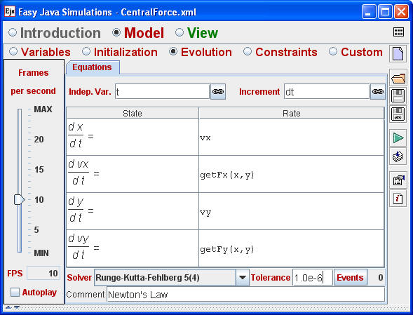
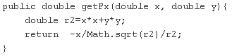

The evolution page for the Central Force model.
The equation solver for a differential equation where the rate of change varies by orders of magnitude must be chosen carefully. A simple algorithm, such as the Euler method, will certainly fail to produce accurate results but even sophisticated solvers, such as a fourth-order Runge-Kutta method, will have difficulty. The problem is in choosing an appropriate a time step dt. Choosing a time step that is appropriate for the entire orbit may, in fact, be impossible because a time step that is appropriate for a particle particle that is moving slowly far from the center of attraction will produce large errors when the particle is moving quickly close to the center of attraction. There are, however, well known and well tested algorithms that automatically adjust their time step in order to achieve a requested tolerance. The most famous of these algorithms was developed by Fehlberg to compute orbits for the NASA space program. Ejs includes this algorithm but hides the fact that that the algorithm's internal time step may be different from that requested by the user. Animations are smooth because the Ejs implementation of the Runge-Kutta-Fehlberg algorithm combines multiple internal steps to produce the request step.

A custom method that computes the x-component of the force.
Note that x and y are passed as arguments.
There is a hidden pitfall when calling (invoking) a custom method to compute a rate of change. Differential equation solvers almost always evaluate the rate at multiple points as they compute the final sate. For example, if the the RK4 solver has a time step of dt = 0.1 it will evaluate the rates at t = 2.0, t = 2.25, t = 2.5, and t = 2.75 using approximate values before computing the final state at 2.1. Consequently, custom methods such as getFx or getFy in the example, should (must) obtain its x and y values from the solver as an argument. If the dynamical variables are not passed to the rate method, the method will use the model's global x and y values rather than the solver's x and y values. The Ejs program will run, but the results will be wrong!